Accessible
There is a huge portion of the market who can not afford a traditional accounting firm, but stills needs to generate dozens of NFe weekly.
A complete visual identity redesign for a modern accounting firm, bringing clarity, trust, and personality to every touchpoint.
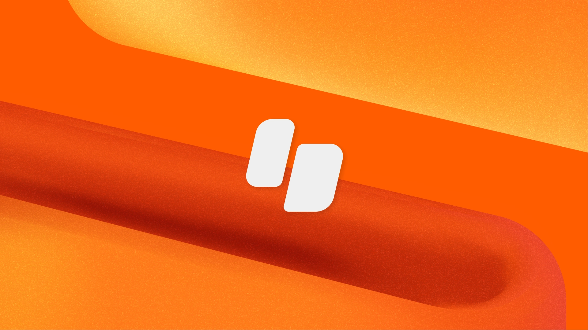
Context
Together with the major business partner we had a meeting where it was introduced to me what is the project, where it came from and what were their ideas for this one.
Like Contábil is going to be a second accounting business of the company, being the first one a larger specialized in high-capital with more then 20 years of experience, seeing and understand the Brazillian market they noticided important keys that we are going to explore in the visual identity later.
There is a huge portion of the market who can not afford a traditional accounting firm, but stills needs to generate dozens of NFe weekly.
To do it by itself, theses professionals have to work in tools fragmented between different online portals.
Tax compliance is extremely complex in Brasil and most people sometimes pays more being in the wrong direction.
Theses keys pain-points that they observed helped with a glimpse to understand with what Like Contábil will be helping theses professionals.
Before contacting me the company already have developed another visual identity which the stakeholders though that sound "too silly" for the importance of this new business.
Research
This was a long part, i've casually interviewed few people on the streets, called some friends and spent some hours scrolling through whatsapp groups of trader and groups on Facebook.
I ended up producing few Personas, therefore this was not a UX/UI Project, creating those helped me understand even deeper who were their target. Here are some of them:
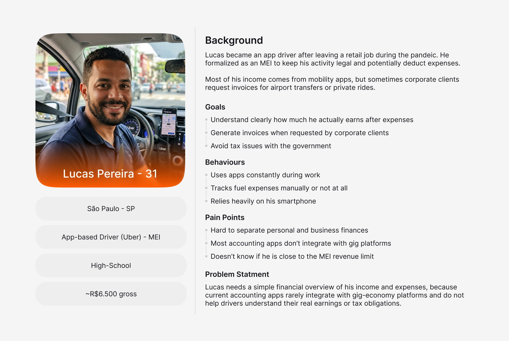
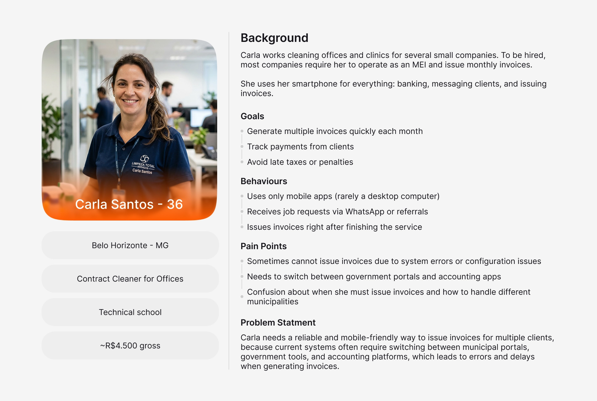
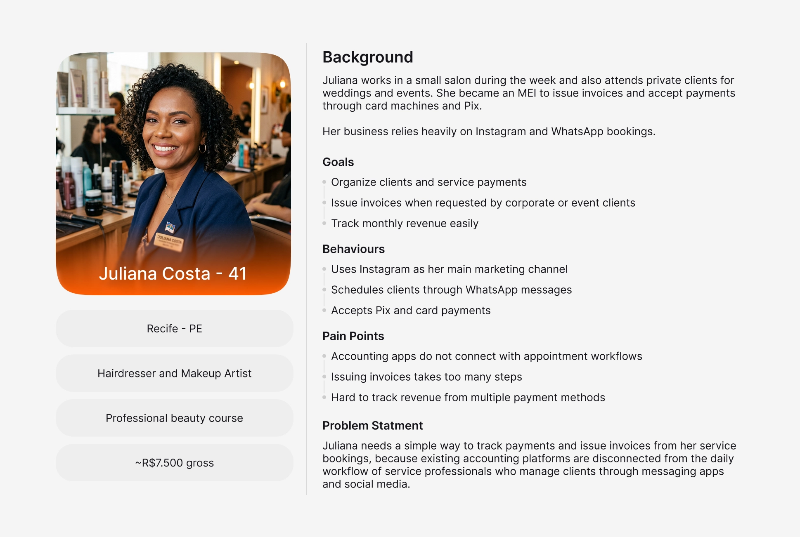
Challenge
Development
With all this information i followed the process to the development with key point in mind
Right now the major part of these people every money spent on anything they didn't know about is considered waste with they don't see real benefit
The benefit of this product is being a problem-solver, their costumer don't want to understand everything, they just want to rest-assured that the problem is going to be solved
One major factor is time, right now their costumers are doing it by themselves or not even doing cause it takes time to learn and understand, the brand needs to look "fast", something that they just need to open, press a few buttons and done!
With that i didn't had to think very much, the realization of what i had to have in this delivery came to mind, here are the points
The existing logo and materials looked generic and did not differentiate the brand from competitors in the accounting space.
Brand assets were applied inconsistently across channels, weakening recognition and trust with clients.
The brand had no cohesive digital identity, making it hard to establish credibility on social media and web platforms.
The firm wanted to attract younger entrepreneurs but the brand felt overly corporate and unapproachable.
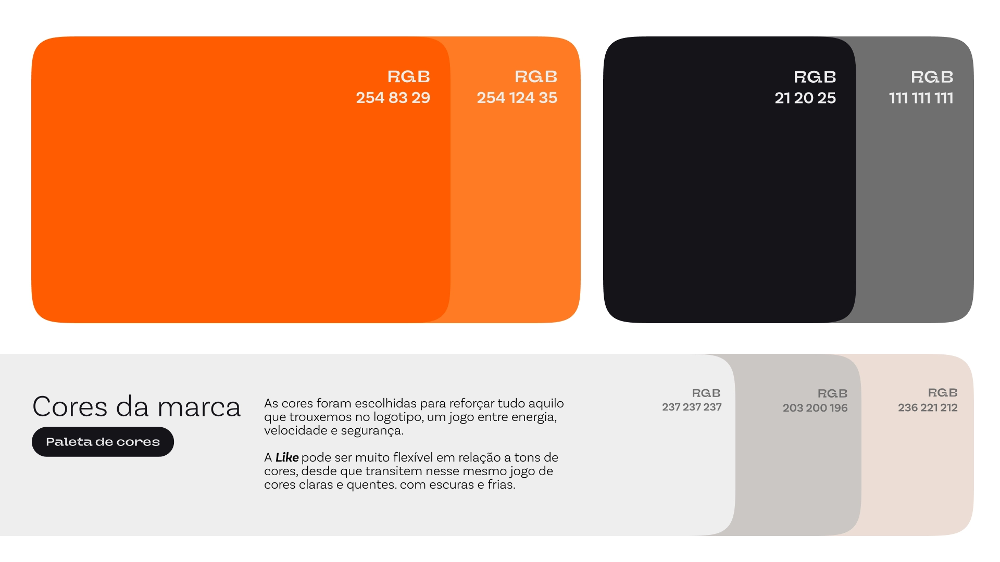
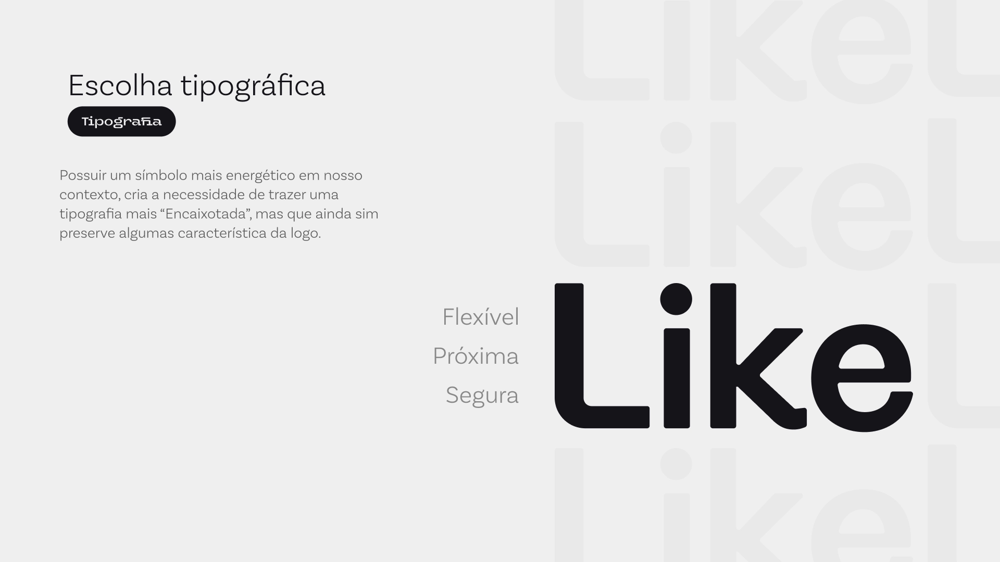
The base costumer is everyday hard-working, jumping from one costumer to another, the brand should look "busy" too, that would be the way to us to connect with theses clients.
Delivery
I couldn't get too deep in what we could have done cause the delivery was limited by the type of project hired. But i ended up delivering the following itens
Logo in different version and sizes ready for app and marketing campaings
General KV ideas of what can be done with it
2 Family typography ready for web-dev
Basic brand guidelines
Logo animation in video and as file for future reference to a motion brading development.
Website and Mobile landing page design

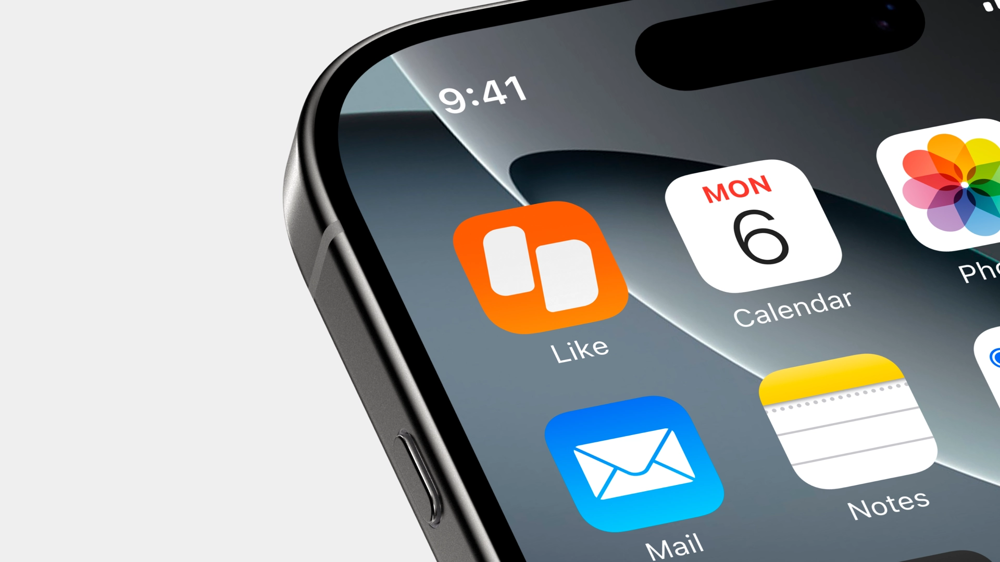
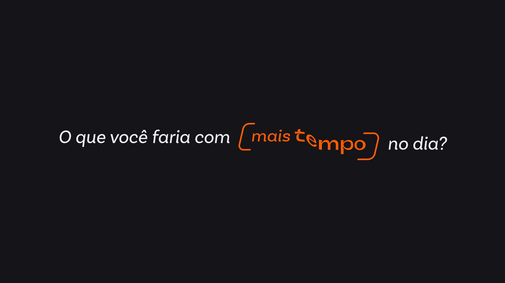
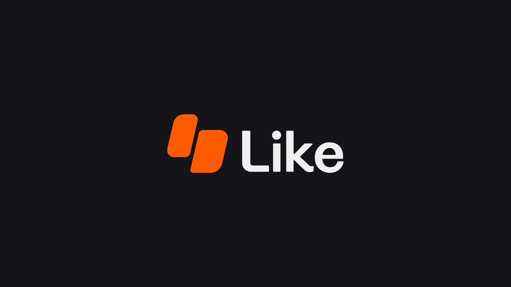
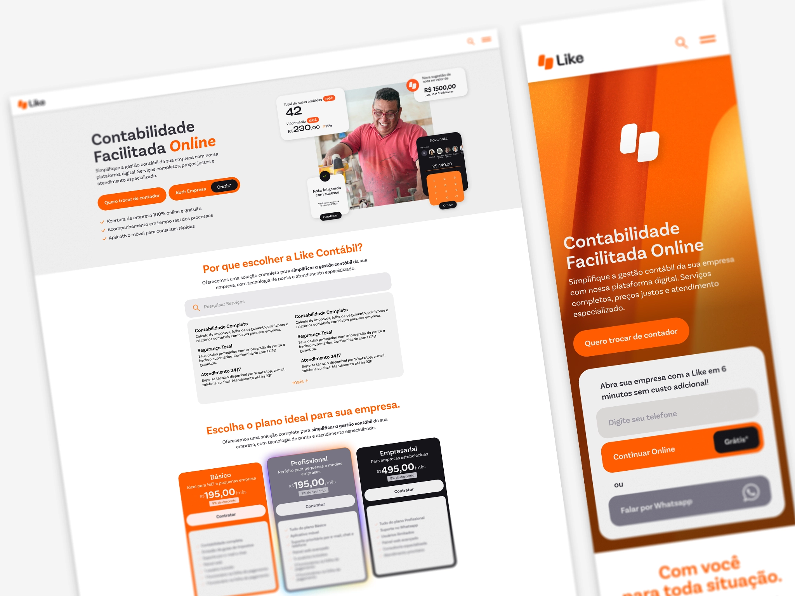
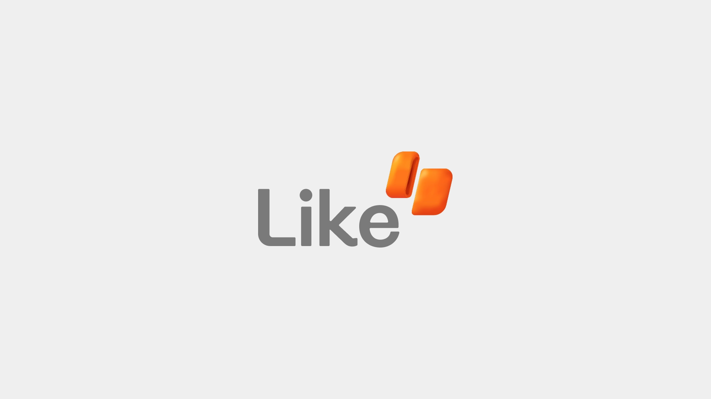
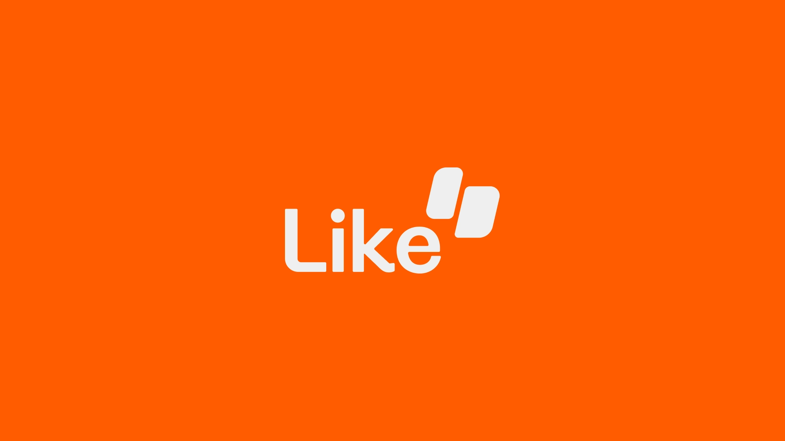
Next Project